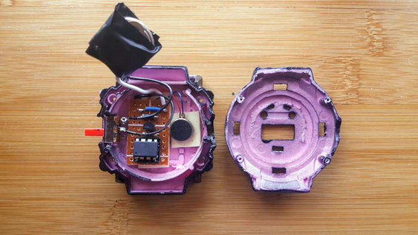
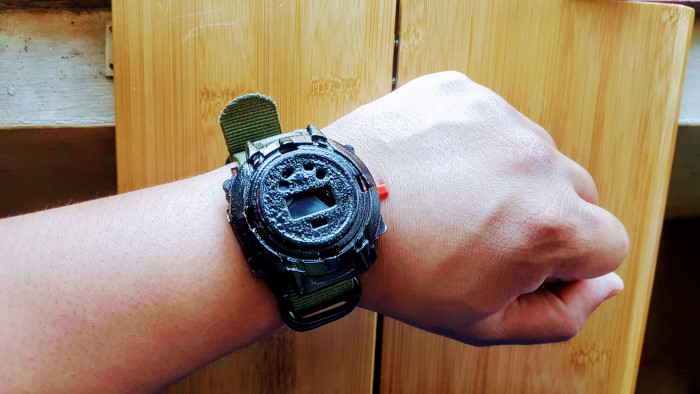
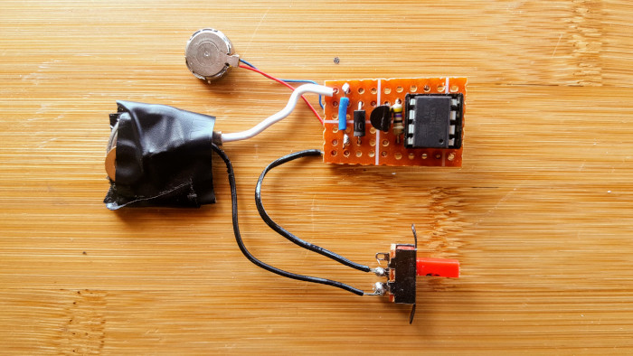

This project was inspired by the character White Rose in the Mr. Robot TV Series. The character's watch beeps every minute that serves as a reminder to her and everyone else how much she values her time. My project will be different from the TV show because it will vibrate instead of beep. It's more discreet so that it won't drive other people crazy.

Project Logs
I've logged my progress while making this project on my Hackaday.io page.

More details
Here were the challenges for this project:
- Design the watch so that it would run as long as possible from a CR2032 button cell battery, which is difficult as a vibrating motor tend to eat up power to run.
- Be accurate as possible with the passage of time without relying on an external clock/crystal. Note that only the passage of time is important for this project. It does not need to vibrate exactly every 5 minutes, a slight delay or offset would still be fine as long as it is not too noticeable.
- Project should be small enough that it can be worn as a watch.
